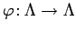
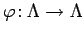

Inhalt Index DeskTop Bronstein

 Dynamische Systeme und Chaos Quantitative Beschreibung von Attraktoren Entropien
Dynamische Systeme und Chaos Quantitative Beschreibung von Attraktoren Entropien


Sei  ein dynamisches System auf
ein dynamisches System auf  mit dem Attraktor
mit dem Attraktor  und einem auf
und einem auf  konzentrierten invarianten Wahrscheinlichkeitsmaß
konzentrierten invarianten Wahrscheinlichkeitsmaß  . Für beliebiges
. Für beliebiges  seien die Würfel der Form mit , für die ist. Für beliebiges x aus einem Qi wird der Semiorbit für wachsende t verfolgt. In Zeitabständen von werden jeweils N-mal hintereinander die Nummern der Würfel notiert, in denen sich der Semiorbit befindet. Sei die Menge aller Startwerte nahe
seien die Würfel der Form mit , für die ist. Für beliebiges x aus einem Qi wird der Semiorbit für wachsende t verfolgt. In Zeitabständen von werden jeweils N-mal hintereinander die Nummern der Würfel notiert, in denen sich der Semiorbit befindet. Sei die Menge aller Startwerte nahe  , deren Semiorbits zu den Zeitpunkten , jeweils in liegen und sei die Wahrscheinlichkeit dafür, daß ein (typischer) Startwert in liegt. Die Entropie gibt den Zuwachs an Information an, den ein Versuch im Mittel liefert, der anzeigt, welches Ereignis aus einer endlichen Anzahl disjunkter Ereignisse wirklich eingetreten ist. In der vorliegenden Situation ist dies
, deren Semiorbits zu den Zeitpunkten , jeweils in liegen und sei die Wahrscheinlichkeit dafür, daß ein (typischer) Startwert in liegt. Die Entropie gibt den Zuwachs an Information an, den ein Versuch im Mittel liefert, der anzeigt, welches Ereignis aus einer endlichen Anzahl disjunkter Ereignisse wirklich eingetreten ist. In der vorliegenden Situation ist dies
| (17.37) |
wobei über alle Symbolfolgen der Länge N summiert wird, die durch Orbits in der oben beschriebenen Weise realisiert werden.
Die metrische Entropie oder KOLMOGOROV-SINAI-Entropie des Attraktors  von bezüglich des invarianten Maßes
von bezüglich des invarianten Maßes  ist die Größe . (Für zeitdiskrete Systeme entfällt der Grenzwert für .) Für die topologische Entropie von  gilt . In vielen Fällen ist -invariantes Wahrscheinlichkeitsmaß auf .
ist die Größe . (Für zeitdiskrete Systeme entfällt der Grenzwert für .) Für die topologische Entropie von  gilt . In vielen Fällen ist -invariantes Wahrscheinlichkeitsmaß auf .
| Beispiel A |
|
Sei eine stabile Ruhelage von (17.1) als Attraktor, versehen mit dem in x0 konzentrierten natürlichen Maß |
| Beispiel B |
|
Für die Shift- oder Modulo-Abbildung (17.28) gilt , wobei |